50pick · 50pick.tz · how a round is generated, how it is resolved against
Twelve Data, and how a player plays it. Every screenshot in this document is from the live platform.
Up & Down asks one question: will the price be higher or lower when the clock runs out? A chain is one asset at one duration. Once started it emits a round at every clock boundary, back to back, with no further operator action. Nobody types a price and nobody decides an outcome — the price comes from Twelve Data and the outcome is arithmetic.
| Action | Role needed | Where |
|---|---|---|
| Approve a price source domain | Trading | Sources & categories |
| Add / edit / enable an asset | Owner (Admin) | Up & Down → Overview |
| Choose the price reading method | Owner (Admin) | Up & Down → Overview |
| Change the thresholds | Owner (Admin) | Up & Down → Overview |
| Create / edit / start / stop a chain | Trading | Up & Down → Overview |
| Watch rounds resolve | Trading | Up & Down → Rounds |
| Place a bet | Any signed-in player | /updown |
accounting authority cannot open the page those controls live on. Everything else is
done as a Trading officer. Never use the Owner login for work a Trading officer can do — if you do,
you stop finding out whether your own permissions work.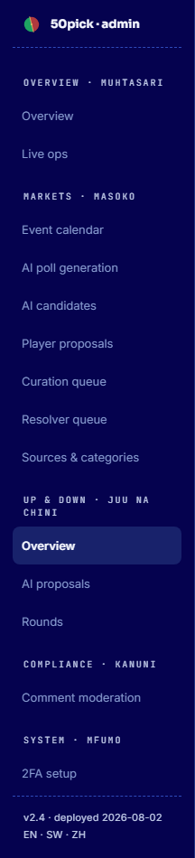
Five steps, in this order. Steps 1–3 are once per asset. Steps 4–5 are what you repeat.
Add twelvedata.com and enable it. An asset can only point at a domain that is an
enabled trusted source, and this is checked three times: when the asset is added, when it is
enabled, and again every time a chain starts.
twelvedata.com row
does not cover both a crypto asset and a macro one — add it under each
category you will use, or the chain refuses to start.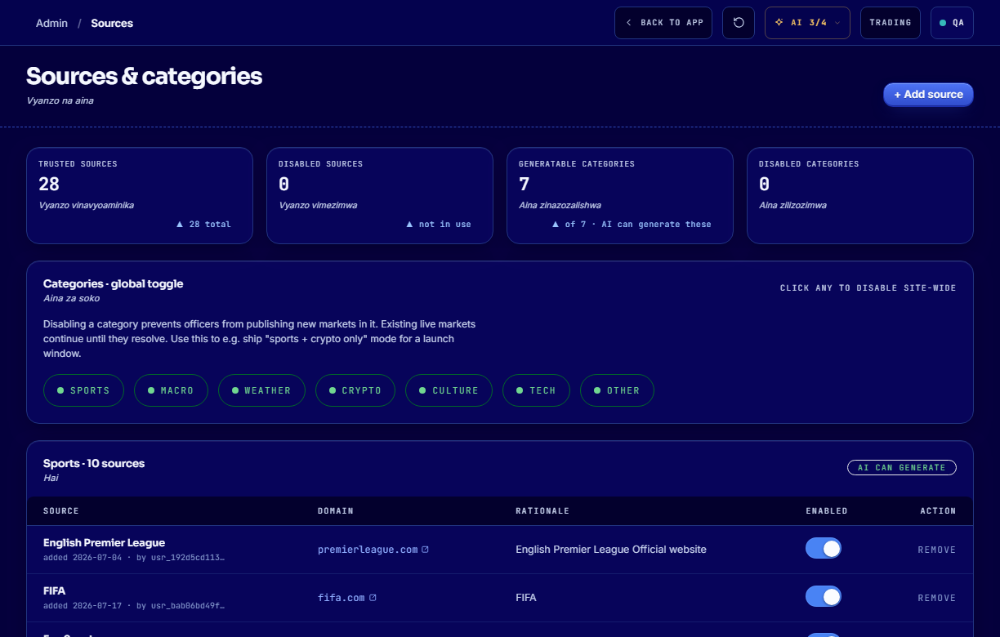
You now make only two choices. Pick an asset class, then a symbol. Everything the symbol determines — category, names in all three languages, icon, decimals, minimum move and the price-source URL — is filled in and locked, and shown to you in a “set by the symbol” panel so you can check it.
| Choice | What it means |
|---|---|
| Asset class | Crypto · Metals · Foreign exchange · Indices. This filters the symbol list. |
| Symbol | Twelve Data’s own symbol, e.g. BTC/USD, XAU/USD.
Only symbols the platform can actually quote are offered. |
| Key | Yours, and never renamed afterwards. Pre-filled with a sensible suggestion. |
crypto is 24/7, everything else follows the
FX/metals week. On 2 August 2026 a coin was added as macro and the console then showed
it “closed · opens 22:00 UTC” every weekend, for no reason. On the same afternoon an asset was added
with the symbol ETH instead of ETH/USD, pointed at a page the feed cannot
read — it voided 27 of 27 rounds. Neither was rejected at the time. Both are now
impossible to create, in the form and on the server.The form asks the real provider, through the same two functions that settle money, and tells you one of four things:
| Verdict | What to do |
|---|---|
| Would confirm | Good. It shows the price, the provider’s own quote time and the skew in seconds. Enable it. |
| Readable but too slow | Do not arm it. The quote is
older than the staleness window, so a round cannot confirm its opening price and
every round will void and refund while looking perfectly healthy. This is exactly what
SOL/USD did — 100% void, 8 of 8 — because its quote lags about 132 s against a
90 s window. |
| Market is shut | Come back when it reopens. A quote read while the market is closed proves nothing. The panel tells you the reopening time. |
| Cannot be quoted | The provider does not carry this symbol on the current plan. Pick another. |
Then switch the asset to Enabled. A disabled asset cannot emit rounds.
| Asset class | Trading window |
|---|---|
| Crypto | 24/7, weekends included. No closed window at all. |
| Metals & FX | Opens Sunday 22:00 UTC (Monday 01:00 EAT), closes Friday 21:00 UTC (Saturday 00:00 EAT). Shut all Saturday. It runs continuously in between — there is no daily close. |
closed · opens 22:00 UTC whenever this applies.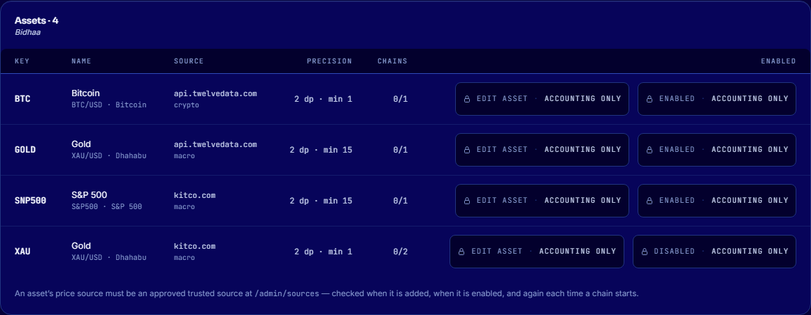
Set method feed and provider twelvedata.
mock, is a simulator. It refuses by
construction in production — it will never settle a real round. If every round is voiding,
check this card first.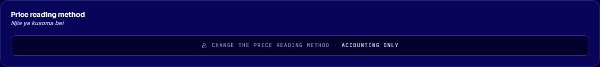
A new chain starts stopped. Creating it emits nothing.
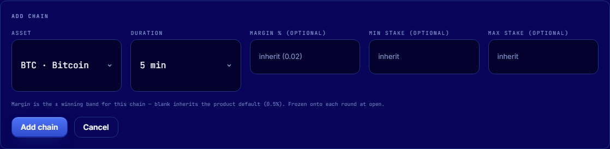
The row then shows RUNNING and a Next boundary time. From that moment rounds appear on their own.
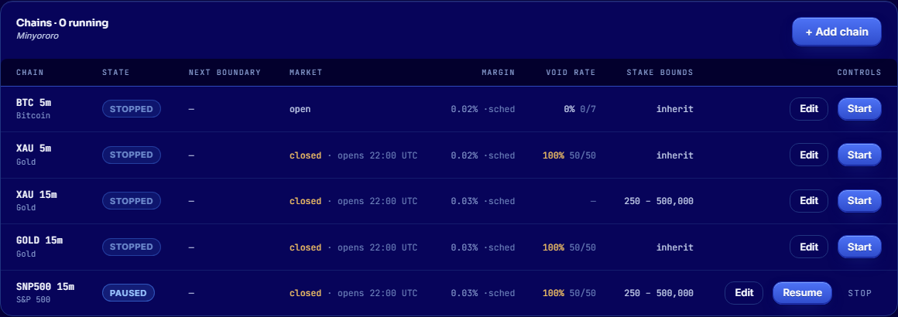
·sched means inherited); Void rate is how often its recent rounds
refunded — the feedback on whether the margin suits the asset.Pause stops new rounds and keeps the chain’s clock. Stop stops new rounds entirely. Both let rounds already open finish and settle normally — no player is ever left holding an unsettled stake.
This is the part to understand before testing, because a round that refunds is not a round that failed.
At every clock boundary the engine reads the price once for that asset and that
instant, from api.twelvedata.com/quote. That single reading is written to a
write-once ledger and shared by every round edge on that instant. So:
Twelve Data reports when it last quoted the price. If that time is more than 90 seconds from the round boundary, the reading is refused — we never settle on a price we cannot date to the moment the round ended. A refused boundary is retried on a backoff ladder; if it never confirms, the round voids and every stake is refunded in full.
At open, the round freezes two targets: open + margin and
open − margin, where margin is a percentage of the opening price. At close:
| Close price | Outcome |
|---|---|
| at or above the UP target | UP — Up backers win |
| at or below the DOWN target | DOWN — Down backers win |
| anywhere between | VOID — every stake refunded in full, no fee |
The band is frozen at open, so changing the margin later only affects future rounds. A bet already taken can never be re-priced.
Crypto trades 24/7. Metals, FX and indices do not: their week runs Sunday 22:00 UTC to
Friday 21:00 UTC. Outside that window no round opens and none settles, and the Chains card
says closed · opens 22:00 UTC. This is deliberate — a data provider will still answer
at the weekend, and settling real money on a market that is shut is not something the platform will
do.
Winners split the pool after the platform’s commission — 13% of the pool, capped at a
third of the smaller side. On a balanced TZS 10,000 pool that is TZS 1,300. Frozen onto
each round at creation. The × 1.4 est. on the buttons is an estimate, never
fixed odds, and the card says so.
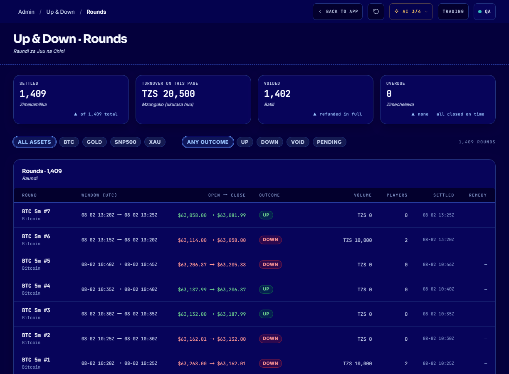
/updown)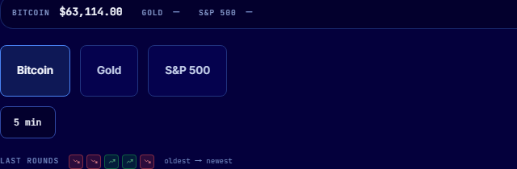
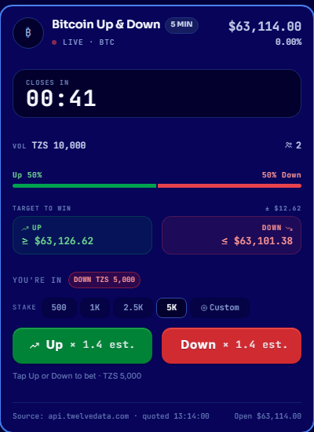
Betting closes at the boundary, because the bet is on the price at that instant.
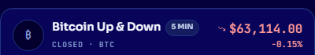
api.twelvedata.com and the time it
quoted. This is what makes the result checkable by the person whose money it was.Every settled round carries an auditable record below the card: each price with its own source, the time the provider quoted it and the time we observed it, the outcome, and an excerpt of the raw provider response. A tester should not take our word for a result — this is the panel that lets them check it.
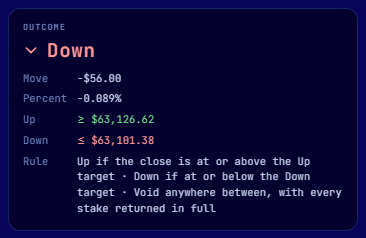
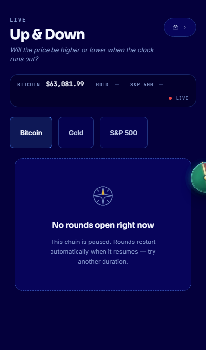
/updown/history)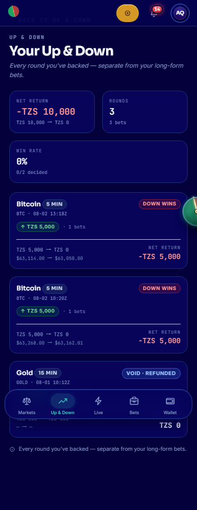
twelvedata, not mock? Price reading
method card.The refusal reasons say different things and send you to different places: market closed is the calendar; stale means a price arrived but too far from the boundary; no-move means the price moved less than the band; unparseable or wrong source means the asset is pointing somewhere it should not be.
A void is not a loss and not an error. Every stake comes back in full and no commission is taken. It is the platform declining to decide, which is the correct behaviour whenever the price cannot be established or the move was too small to call.
50pick.tz. Screenshots captured from the
live platform, 2026-08-02. Round udr_0c015a854aa105600373 is the worked example:
opened 63,114.00, closed 63,058.00, band ±$12.62, resolved DOWN, settled 441 ms after its own
boundary, paid TZS 8,700 to the Down backer against the Up backer’s loss, commission TZS 1,300.